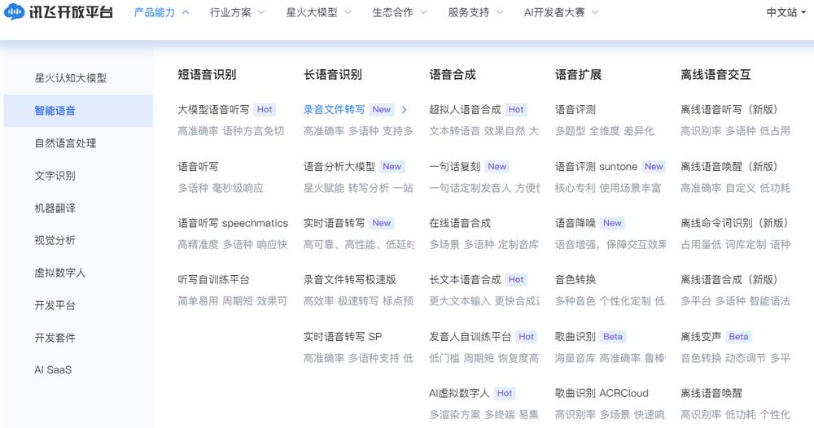
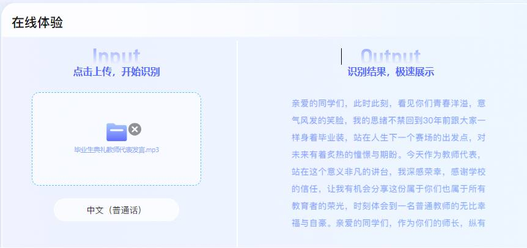
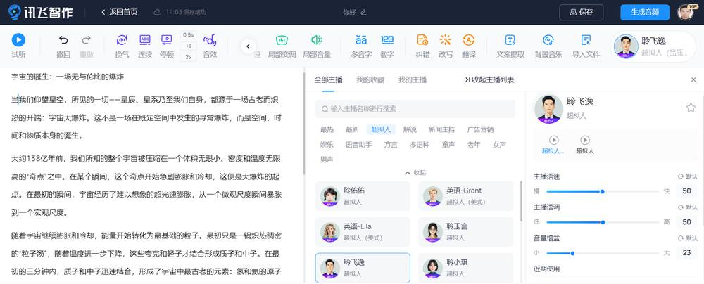
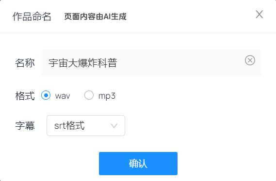

第 1 页 · 3 课堂实践
3 课堂实践

模块3：感知人机语音交互


第 2 页 · 怎样将会议语音记录

怎样将会议语音记录
转写成文字？
第 3 页 · 认识讯飞开放平台
认识讯飞开放平台
第 4 页 · 认识讯飞开放平台
认识讯飞开放平台

第 5 页 · 项目1：录音文件转写文本
项目1：录音文件转写文本
用手机等录音工具将听到的内容录制成语音文件，然后借助语音转写工具，把语音内容转化成文本，将声音资料转化为有组织的记忆资产
1.实践任务描述
第 6 页 · 项目1：录音文件转写文本
项目1：录音文件转写文本
2.解决方案设计
第 7 页 · 任务1—准备语音文件
任务1—准备语音文件
项目1：录音文件转写文本
3.实践任务实施
第 8 页 · 项目1：录音文件转写文本
项目1：录音文件转写文本
3.实践任务实施
任务2—上传音频文件完成文本转写

第 9 页 · 项目1：录音文件转写文本
项目1：录音文件转写文本
大家去找一找，还有哪些AI工具能将音频文件高效转写成文字？
思考
第 10 页 · 数字人主播是如何

数字人主播是如何
将文稿转化成语音的？
第 11 页 · 认识讯飞智作
认识讯飞智作
第 12 页 · 项目2：直播讲稿合成语音
项目2：直播讲稿合成语音
将直播文稿迅速合成为一个清晰、沉稳、富有磁性的声音。
1.实践任务描述
第 13 页 · 项目2：直播讲稿合成语音
项目2：直播讲稿合成语音
2.解决方案设计
第 14 页 · 项目2：直播讲稿合成语音
项目2：直播讲稿合成语音
任务1—上传直播文稿
3.实践任务实施

第 15 页 · 项目2：直播讲稿合成语音
项目2：直播讲稿合成语音
3.实践任务实施
任务2—按需调参生成音频文件

第 16 页 · 项目2：直播讲稿合成语音
项目2：直播讲稿合成语音
3.实践任务实施
任务2—按需调参生成音频文件
第 17 页 · 学生分享及教师点评
学生分享及教师点评

| 分享要点 | 分值 | 计分 | 教师点评 |
| 1、讯飞开放平台还有哪些智能语音技术？ | 15 | 主动了解讯飞智能云 | |
| 2、离线音频转写与在线语音识别有何异同？ | 15 | 主动思考，探究差异 | |
| 3、你认为，语音合成最大的价值是什么？ | 30 | 积极思考、善于主动发现 | |
| 4、如何让合成的语音与主播的自然发音更逼真？ | 10 | 洞悉技术细节，能提问题 | |
| 5、还有哪些AI工具可用于音频文件转写？ | 20 | 问题驱动，求解答案 | |
| 6、其它（含逻辑、表情、主动、清晰、流畅、新意等） | 0-10 | 能说、会思、质疑、精技 |
第 18 页 · 子任务3：语音提示处理
子任务3：语音提示处理

发出中国强音
勇做技能先锋